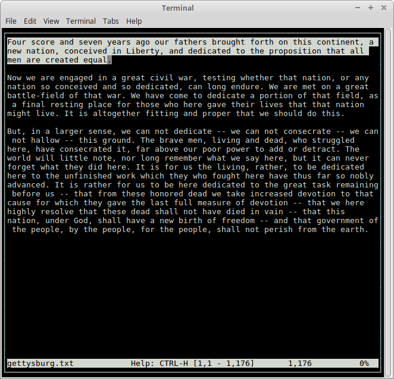

TED - the text editor
TED is a free, console-based text editor. Implemented using the termbox library in Go. Available on Linux, MacOS and Windows.
Features:
- Load/save/edit files.
- Select text, copy/cut/paste.
- Search text.
Download: Debian/Ubuntu MacOS Windows
(Windows has some display issues. I'll fix 'em once I get hold of a Windows box. -rob)